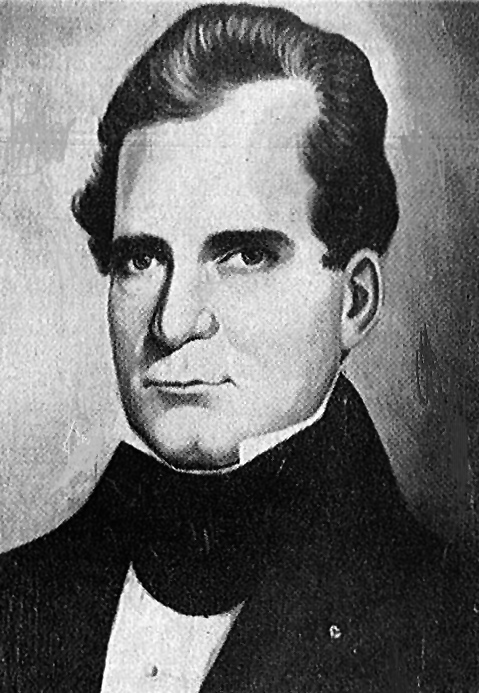

General John Coffee
General John Coffee (December 3, 1782-September 25, 1836) was a Georgia surveyor, planter, state senator, militia brigadier general, road supervisor, removal-era state agent, and United States representative. He is remembered in South Georgia for the Coffee Road, but that road was only one part of his public career. His surviving correspondence also places him inside Georgia's seizure and survey of Cherokee land, where he enforced state law, managed occupied property, supervised survey work, and supported treaty efforts intended to secure Cherokee removal.[1][2][3]

Anonymous historical portrait identified as Georgia congressman John Coffee. The original repository and chain of custody have not been identified. The image was distributed through Find a Grave and Wikimedia Commons, where it is marked as public domain. It should not be treated as an authenticated institutional portrait.[4]
Coffee's name is easily confused with that of General John Coffee of Tennessee, Andrew Jackson's cavalry commander, who was born in 1772 and died in 1833. The man in this dossier was born in Virginia in 1782, lived in Georgia, represented Georgia in Congress, and carried House biographical identifier C000583. His own signatures and federal records use John Coffee or Jno. Coffee. The middle initial E, found in some later Georgia references, is not supported by the federal biography or the signatures inspected for this project.[1][2]
From Virginia to South Georgia
The U.S. House Historian says Coffee was born in Prince Edward County, Virginia, on December 3, 1782. He moved with his father to a plantation near Powelton in Hancock County, Georgia, in 1800. The official biography does not name his father. Coffee settled in Telfair County in 1807 and pursued agriculture.[1]
An original February 3, 1808 letter places Coffee at Powelton and proves that he had received a state surveying assignment in newly acquired territory. He wrote Governor Jared Irwin about delays caused by rain and high water in "that part of the late acquired territory which I have the honour to Survey," calling it "my district." The letter does not identify the district or preserve his commission, but it establishes his work as a state surveyor much earlier than most short biographies indicate.[5]
By February 1819 Coffee was writing from Jacksonville in Telfair County. He recommended a candidate for district surveyor to Governor William Rabun, further connecting him to the surveying and political network around the new South Georgia counties.[6]
The Coffee Road
Georgia authorized the southern part of the road later called Coffee Road on December 23, 1822. The act began at the Alapaha River at or near Cunningham Ford. It ran through Irwin land districts 10, 12, and 13 and Early districts 18 and 23, then continued by the best practicable route to the Florida line near the Ochlocknee River. The state appropriated $1,500 and directed the governor to appoint two supervisors.[7][35]
Georgia's official 1823 report records the appointment. Governor John Clark appointed General John Coffee and Thomas S. Swain of Telfair County on December 24, 1822, the day after the road measure was approved. This near-contemporary official evidence verifies their joint supervision and carries more weight than the later county histories and historical markers.[36]
Work began in August 1823 and ended November 15. The report described nearly ninety miles of road, plus about seven more miles needed to reach a suitable Alapaha crossing. The project included several small bridges, a larger bridge over a stream whose printed name is difficult to identify, and four ferry flats. The report does not explain how Coffee and Swain divided the fieldwork or identify the crew. Later accounts say Coffee directed a militia road party, but no original contract, payroll, survey, or crew list was located online.[7][8][36]
Coffee received the full $1,500 appropriation on December 24, 1822. The governor's order supplied no instructions, contract, performance bond, or accounting procedure, so the 1823 committee could not determine from the available records how the money had been spent or judge the completed work. It ordered the commissioners to submit a detailed report within six months. In 1824 Coffee sent the governor a letter and accounts, but a second committee found that the material still did not explain the work well enough and asked the governor to investigate. Neither report accuses Coffee or Swain of theft, and neither says money was missing. The problem was inadequate instruction and documentation.[36][37]
The familiar Jacksonville-to-Florida description combines two road projects. The 1822 authorization began at the Alapaha, not at Jacksonville on the Ocmulgee. A published transcription of Irwin County court records says that Sion Hall, James Allen, and Thomas Townsend were appointed in July 1824 to lay out a road from the Ocmulgee to the Alapaha. That northern route later became part of the corridor remembered as Coffee Road, but the available transcription does not say that Coffee or Swain supervised it.[8][9]
The road's original military purpose also needs careful wording. The House biography and modern Georgia markers say it carried troops, munitions, or supplies toward Florida. The 1822 act describes a public road, route, supervisors, and appropriation but does not state a military purpose. The military-supply description is a well-established later account, not a fact independently proved by the act.[1][7][8][35]
Coffee Road helped organize settlement across the wiregrass region before Lowndes and Thomas counties were created in 1825. Near present Morven, it served Sion Hall's home and inn, Hamilton W. Sharpe's store, and the Mount Zion Camp Ground neighborhood. Those places became an early civic and commercial center for the western Lowndes territory that later entered Brooks County.[7][10]
The road probably crossed Little River in the later Folsom Bridge corridor. Montgomery M. Folsom wrote in 1885 that Coffee's road cutters crossed at the point later occupied by Folsom Bridge, and an 1869 map shows a road in that corridor. No 1820s survey or deed has fixed the crossing. Joyce's Ferry was a separate crossing at the later Miller Bridge and should not be used as the Coffee Road crossing.[11][12]
Coffee Road did not pass through the future Barney town site. The Folsom Bridge corridor lay about 2.5 miles east/south-east of it. Barney's connection to Coffee Road is regional: the road brought travel, mail, courts, stores, and settlement into the Little River and Morven area decades before the railroad created the town.[10][11][12]
Militia rank and Creek War claims
Coffee's title of general was real, although the date and circumstances of his first commission remain uncertain. His November 15, 1834 resignation to Governor Wilson Lumpkin identifies the exact office. Coffee resigned his commission as brigadier general of the 2nd Brigade, 6th Division of the Georgia militia because his other duties prevented him from giving the command enough attention.[13]
The House Historian calls him a general of the state militia during the Creek War. The short federal biography does not name a unit, battle, campaign, or commission date, and no muster roll or wartime report connecting this John Coffee to a specific Creek War action was located online. Many Creek War references to "General Coffee" concern the older Tennessee officer. Coffee's later Georgia rank is proved by his own resignation, but a detailed Creek War service record for him remains unverified.[1][13]
Georgia politics and Native land policy
The House Historian says Coffee served in the Georgia Senate from 1819 through 1827. The New Georgia Encyclopedia's Coffee County article says he served in both houses of the legislature, but it gives no dates. No original legislative roster inspected in this project reconciled the difference. The Senate term is supported by the current federal biography. Service in the Georgia House remains a secondary claim.[1][14]
Coffee also took part in boundary and treaty work. In November and December 1829, he gathered evidence for Governor George Gilmer in the dispute over the boundary between the Creek and Cherokee nations. An 1826 letter addressed to Generals John Clark, Thomas Hinds, and Coffee also connects him to federal negotiations involving the Chickasaw and Choctaw nations. The precise commission and duties for every negotiation were not reconstructed from the available material.[15][16]
His best-documented state assignment began under Governor Wilson Lumpkin in late 1831. Lumpkin asked Coffee to take chief command of the Georgia Guard in Cherokee country. Coffee established headquarters at Etowah and corresponded with the governor throughout 1832. His letters describe arrests for unauthorized gold digging, instructions to officers at state stations, possible habeas corpus proceedings, property rentals, and the survey of Cherokee territory.[17][18][19]
The assignment belonged to Georgia's effort to abolish Cherokee government, extend state law over Cherokee territory, seize land, and distribute it to white lottery winners. The United States Supreme Court rejected Georgia's position in Worcester v. Georgia in 1832, but Georgia did not yield. Andrew Jackson wrote to Coffee that the Court's decision had "fell still born" because it could not force Georgia to obey.[20]
Coffee was not a neutral administrator. In February 1832 he discussed renting recently abandoned Cherokee places and stationing a detachment to stop Cherokee gold mining. In March he wrote about using the influence of Cherokee leaders to encourage emigration and reported more than $2,000 collected from property rentals. In July he coordinated surveyors. In October he supported a removal treaty and described Principal Chief John Ross's response as insolent.[18][19][21]
His correspondence also records limits and internal criticism. Coffee complained that a Georgia rental law encouraged fraud. In November 1832 he warned that white land winners would try to drive Cherokee families from their improvements and recommended an agent with a small force to protect them temporarily. That recommendation did not challenge removal or Georgia's claim to the land. It shows that he opposed some immediate abuses while continuing to administer the system that made dispossession possible.[19][22]
Coffee wrote Lumpkin on January 30, 1833, that their "official inter-course has ended" and referred to the appointment the governor had given him. The letter proves an executive appointment and its end, but it does not state the formal title. Later references call him an agent, guard commander, renting agent, or survey supervisor. The exact title should remain unresolved until the commission is found.[23]
His involvement continued after he went to Congress. From Washington in March 1834, Coffee asked a Georgia official to help Andrew Ross bring a pro-treaty Cherokee delegation to the capital. A March 1836 letter discussed another delegation, treaty prospects, John Ross, Andrew Ross, and payment of expenses. These letters place Coffee on the treaty-party side of the political campaign that preceded forced removal.[24][25]
Congress
Coffee was elected as a Jacksonian to the Twenty-third Congress and took office on March 4, 1833. He was reelected to the Twenty-fourth Congress and served until his death. The House biography does not list a committee chairmanship or major law associated with him, and the available Register of Debates indexes did not reveal a substantial body of published speeches under his name.[1][26]
His surviving Washington letters show that Cherokee treaty politics remained part of his work. They do not establish that Congress formally assigned him to negotiate a treaty. His influence appears to have come from his Georgia political standing, earlier state appointment, and relationship with pro-treaty Cherokee leaders.[24][25]
Coffee's politics followed Andrew Jackson's Georgia coalition. Contemporary election tickets identify him as John Coffee of Telfair. After his death, Georgia newspapers described his seat as a Union Party vacancy and urged voters to select a successor who supported the same principles.[27]
Household, plantation, family, and slavery
An indexed Tattnall County marriage record says John Coffe married Penelope Bryan on December 20, 1808. FamilySearch and Ancestry independently index the same couple, county, and date from Georgia county marriage material. Later memorial records call her Ann Penelope Bryan Coffee, but the longer name and her reported life dates were not confirmed in an original record.[32]
Public cemetery and family-tree pages list as many as ten children. Coffee's memorial links six: Sarah Ann Elizabeth, Peter Harrison, John Bryan, Christopher Columbus, Andrew Jackson, and Hill Bryan Coffee. These are useful leads, not a settled family group. No family Bible, probate distribution, or other original record inspected in this project verified the complete roster.[28]
The House biography describes Coffee as engaged in agriculture and says he died on his plantation near Jacksonville. Those statements establish a plantation setting but do not give acreage, crops, deeds, or an inventory. Census indexes place a John Coffee or Coffer household in Telfair County in 1820 and 1830. The public 1830 index indicates that enslaved people lived in the household, but the numerical fields and original image were not accessible. No defensible household or enslaved-person count can be given from the material inspected.[1][33]
An original Jones County court file supplies a more specific record of Coffee's participation in slavery. In 1835 an enslaved man named Daniel, also called Brister, was seized and sold to satisfy debts owed by Wright Permenter and Charles H. Brooks. Daniel sold for $780. Coffee received $64.54 from the proceeds as a judgment creditor. The document proves that Coffee benefited financially from the forced sale. It does not prove that he owned Daniel.[34]
Illness, death, and posthumous election
Coffee died at his Telfair County residence on Sunday, September 25, 1836. A contemporary notice, first published in the Georgia Journal and reprinted in the Augusta Chronicle, said he had been ill only a few days. A man who attended his last moments identified the disease as inflammation of the brain. That description is period testimony, not a modern diagnosis.[29]
The House Historian gives the same death date and places the plantation near Jacksonville. Coffee had suffered a longer period of illness before the final attack. When Representative Thomas Haynes announced his death to the House in December, he said Coffee had been seriously ill during much of the previous session, had returned to his duties without a complete recovery, and then declined at home. The House adopted mourning resolutions and adjourned.[1][30]
Georgia's statewide congressional election occurred on October 3, eight days after Coffee died. News traveled slowly enough that voters reelected him to the Twenty-fifth Congress. Newspapers soon reported both his death and the need for a special election. John W. A. Sanford was elected to fill the vacancy.[1][27][29]
Burial, commemoration, and namesakes
The House biography says Coffee was first buried on his plantation near Jacksonville and reinterred in McRae Cemetery in 1921. Find a Grave identifies the present burial place as Oak Grove Cemetery in McRae. The apparent cemetery-name difference may reflect changing local usage or a derivative error. No 1921 reinterment permit, cemetery register, or contemporary reburial notice was located online.[1][28]
Coffee County, created in 1854, was named for him. General Coffee State Park near Douglas also bears his name. Modern memorials tend to emphasize the road, military rank, and frontier settlement. A complete account must also include his survey work and his direct participation in Georgia's Cherokee land policy.[14][31]
The available portrait has limited provenance. Wikimedia Commons identifies it as an anonymous work made before Coffee's death and marks it public domain, but its stated source is Find a Grave and no original repository is named. It is publication-safe with that limitation stated in the caption. It is not strong enough to authenticate facial identity on its own.[4]
Evidence assessment
| Claim | Grade | Reason |
|---|---|---|
| Georgia John Coffee was born December 3, 1782, in Prince Edward County, Virginia | Verified | Current U.S. House biography and later congressional directories agree. |
| He moved to Hancock County in 1800 and settled in Telfair County in 1807 | Verified | Current U.S. House biography. |
| He held a Georgia survey assignment in 1808 | Verified | Original letter to Governor Jared Irwin refers to his district and survey work. |
| He supervised Coffee Road with Thomas Swain | Verified | Georgia's official 1823 report names both men, their county, and the December 24, 1822 appointment date. |
| The 1822 road began at Jacksonville on the Ocmulgee | Contradicted | The quoted authorization began at the Alapaha near Cunningham Ford. |
| Coffee's crew crossed Little River at the later Folsom Bridge corridor | Strong probable | Specific 1885 account and later map evidence; no original survey. |
| Coffee Road crossed the exact future Barney town site | False | Coffee Road did not cross the town site. The Folsom Bridge corridor lay about 2.5 miles east/south-east of future Barney. |
| Coffee was a brigadier general in Georgia's 2nd Brigade, 6th Division | Verified | His original 1834 resignation states the office. |
| He performed specific Creek War service | Unresolved | Federal biography says he was a militia general during the war, but no unit or action record was found. |
| He served in the Georgia Senate from 1819 through 1827 | Verified | Current U.S. House biography. |
| He served in both houses of the Georgia legislature | Unresolved | New Georgia Encyclopedia says both; official House biography names only the Senate. |
| He directed Georgia officers and survey work in Cherokee country in 1832 | Verified | Original correspondence from Etowah and Georgia Archives records. |
| He supported treaty efforts leading toward Cherokee removal | Verified | Original 1832, 1834, and 1836 correspondence. |
| He represented Georgia in Congress from 1833 until death | Verified | Current House biography and congressional records. |
| He married Penelope Bryan in Tattnall County on December 20, 1808 | Strong index evidence | Two major genealogy databases independently index the same county marriage record. |
| Enslaved people lived in his 1830 household | Strong index evidence | The identified census index reports enslaved household members, but the image and numerical fields were unavailable. |
| He benefited from Daniel's 1835 forced sale | Verified | Original Jones County court file records Coffee's judgment and payment from the proceeds. |
| He was reelected after death on October 3, 1836 | Verified | Current House biography and contemporary election reporting. |
| He died September 25, 1836, near Jacksonville | Verified | Federal biography and contemporary newspapers agree. |
| Inflammation of the brain caused his death | Contemporary report | Reported by a witness in 1836, but not supported by a medical record. |
| He was reinterred at McRae in 1921 | Strong secondary support | Current House biography; original reinterment record missing. |
| The published portrait is an authenticated institutional likeness | Not proved | Image is public domain, but original repository and chain of custody are unknown. |
Research limits
The documented online search covered stored Barney and Coffee Road research; the U.S. House Historian and Biographical Directory record; Georgia Archives File II; Digital Library of Georgia governor's correspondence; Georgia Historic Newspapers; available Newspapers.com search results; Georgia Historical Society markers; New Georgia Encyclopedia; Georgia State Parks; Internet Archive books and congressional directories; digitized Georgia acts; Find a Grave; Wikimedia Commons; historical county maps; general web results; and derivative genealogy indexes.
The Tennessee general was excluded by date, residence, office, and context. Search results for unrelated later men named John Coffee were also excluded.
Not located online were Coffee's birth or baptism record; his father's verified name; the original image of the indexed marriage record or a family Bible; complete census household images tied to him; plantation deeds; will, probate, or estate inventory; militia commission or Creek War muster; the original December 24, 1822 executive order; road contract, vouchers, payroll, survey, crew list, or final settlement; the formal commission for his Cherokee assignment; complete Georgia legislative journals; private congressional papers; medical record; original burial register; 1921 reinterment record; or an institutional portrait record.
Those gaps do not weaken Coffee's identity, main public chronology, militia office, congressional service, road appointment, or documented Cherokee assignment. They do require caution about his parentage, complete family, property, enslaved household, Creek War service, the division of road work, the crew, the project's final accounting, and the portrait.
Sources
- U.S. House of Representatives, History, Art & Archives, "COFFEE, John," record C000583, official biography.
- Georgia Archives, File II, Coffee, John, 34-page name file, RG 4-2-46, collection record.
- Digital Library of Georgia, John Coffee correspondence, 1819 and 1829-1832, creator results.
- Wikimedia Commons, John E. Coffee, anonymous historical portrait sourced through Find a Grave, public-domain designation reviewed August 22, 2026.
- John Coffee to Governor Jared Irwin, February 3, 1808, Georgia Archives File II, original image.
- John Coffee to Governor William Rabun, February 4, 1819, Jacksonville, Telfair County, Digital Library of Georgia, record tcc460.
- Folks Huxford, The History of Brooks County, Georgia, 1858-1948, pp. 32-34, quoting the December 23, 1822 road measure and describing Coffee's supervision.
- Georgia Historical Society, Old Coffee Road marker records for Nashville, Morven, Douglas, and six other sites along the corridor.
- Published transcription of Irwin County Inferior Court road minutes, July 1824, preserved in the prior Coffee Road research file; original minute image not located online.
- Hamilton W. Sharpe, "History of Lowndes County," Valdosta Times, April 5, 1884, p. 3, Newspapers.com image 889710685.
- Montgomery M. Folsom, "Down the River," Valdosta Times, June 20, 1885, p. 2, Newspapers.com image 889715950.
- B. W. Frobel, Map of Brooks County, 1869, Georgia Archives; R. D. Flippen, Map of Brooks County, Georgia, 1908.
- John Coffee to Governor Wilson Lumpkin, resignation as brigadier general, November 15, 1834, Georgia Archives File II, original image.
- New Georgia Encyclopedia, "Coffee County".
- John Coffee to Governor George R. Gilmer, November 26, 1829, Digital Library of Georgia, record tcc696; "Private remarks" on boundary testimony, December 30, 1829, record ch073.
- Letter to Generals John Clark, Thomas Hinds, and John Coffee, November 8, 1826, Digital Library of Georgia, record krc010.
- Governor Wilson Lumpkin to John Coffee, November 23, 1831, Georgia Archives governor's correspondence, referenced in the Digital Library of Georgia collection.
- John Coffee correspondence from Etowah, February through July 1832, including tcc705, tcc708, tcc712, and tcc716.
- Georgia Archives File II, Etowah headquarters correspondence and lot schedule, May-November 1832, image sequence.
- New Georgia Encyclopedia, "Worcester v. Georgia (1832)", including Andrew Jackson's letter to Coffee.
- John Coffee to Governor Wilson Lumpkin, October 9, 1832, Digital Library of Georgia, record tcc718.
- John Coffee to Governor Wilson Lumpkin, November 22, 1832, Digital Library of Georgia, record tcc720.
- John Coffee to Governor Wilson Lumpkin, January 30, 1833, Georgia Archives File II, original image.
- John Coffee to William Hardin, March 6, 1834, Georgia Archives File II, original image.
- John Coffee to Wilson Lumpkin, March 4, 1836, Georgia Archives File II, image sequence.
- Register of Debates in Congress, Twenty-third and Twenty-fourth Congress indexes, reviewed through Internet Archive; U.S. House Historian record C000583.
- Macon Georgia Telegraph, October 20 and 27 and November 3, 1836, Georgia Historic Newspapers, congressional-vacancy and election reports.
- Find a Grave, John Coffee memorial 7988605, derivative family and cemetery record reviewed with stated limits.
- "Death of Gen. Coffee," Augusta Chronicle, October 8, 1836, p. 4, Georgia Historic Newspapers page.
- Representative Thomas Haynes, announcement of Coffee's death, U.S. House, December 1836, reprinted in the Standard of Union, December 22, 1836, p. 2, Georgia Historic Newspapers page.
- Georgia State Parks, General Coffee State Park; Georgia Historical Society, Coffee County marker.
- FamilySearch, “Georgia, County Marriages, 1785-1950,” John Coffe and Penelope Bryan, Tattnall County, December 20, 1808, person record KXJN-BS8, citing Georgia Department of Archives and History material on FHL microfilm 206,419; Ancestry, “Georgia, U.S., Marriage Records From Select Counties, 1828-1978,” record 564655, image 40660_308962-00044.
- FamilySearch, 1820 and 1830 United States census indexes for John Coffer or Coffee in Telfair County, record identifiers XHG6-PKW and XHGB-F1Z; 1830 citation to National Archives microfilm M19, roll 21, p. 12; Ancestry, 1830 United States Federal Census, record 958141, image 4409523_00027.
- Coffee v. Wright Permenter and Charles H. Brooks, Jones Superior Court, 1835, Digital Library of Georgia, item guan_1170_026-013-001.
- Georgia General Assembly, "To authorise the opening of a Road from the Alapaha to the Florida line," Acts of the General Assembly of the State of Georgia ... November and December, 1822, pp. 96-97, Digital Library of Georgia record dlg_zlgl_5654590.
- Georgia General Assembly, report on the Alapaha-to-Florida road, Acts of the General Assembly of the State of Georgia, Passed at Milledgeville, at an Annual Session, in November and December, 1823, pp. 236-237, Digital Library of Georgia record dlg_zlgl_6090100.
- Georgia General Assembly, follow-up report on Coffee's letter and accounts, Georgia Acts of the General Assembly, November 1824, p. 195, Digital Library of Georgia record dlg_zlgl_6626421.